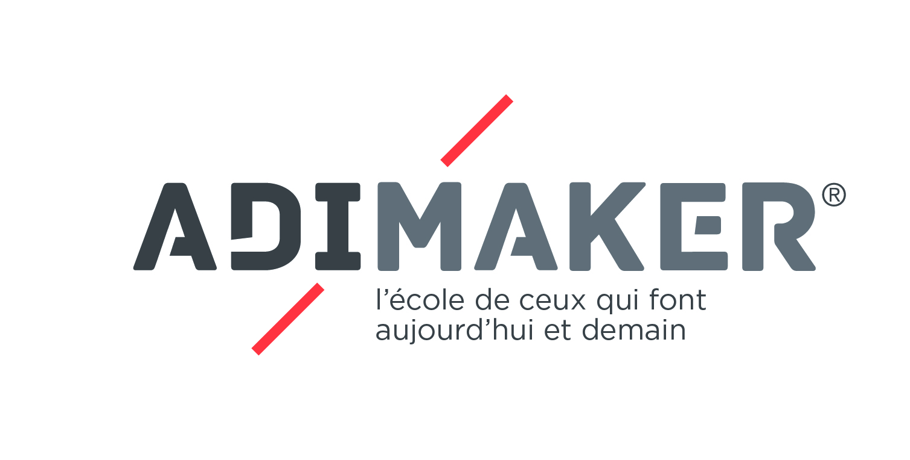

Bricoleur diront ses parents, appelé Géo Trouvetou par ses professeurs d’école primaire. Bidouilleur et fan de Mac Gyver, il a toujours démonté des objets pour savoir comment ils fonctionnent.
Par exemple, quand il était petit, il a démonté la machine à laver qui n’était plus fonctionnel.
Il a toujours apprécié manipuler, fabriquer des objets avec ses mains, il trouve que l’on apprend beaucoup plus en manipulant qu’en écoutant quelqu’un parlé. C’est pour cela qu’il a choisi de faire la classe préparatoire Adimaker.
